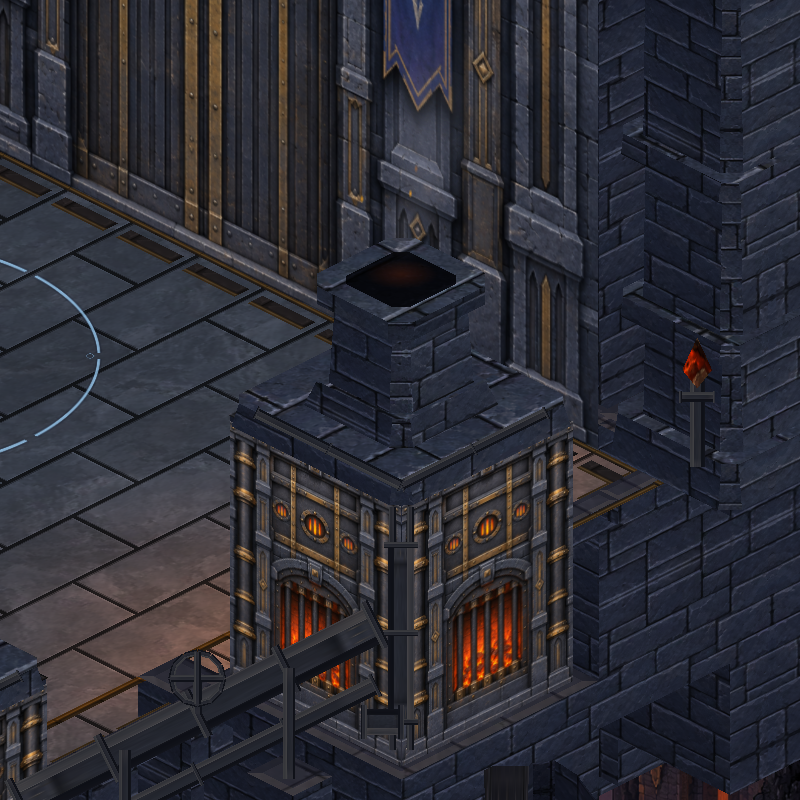
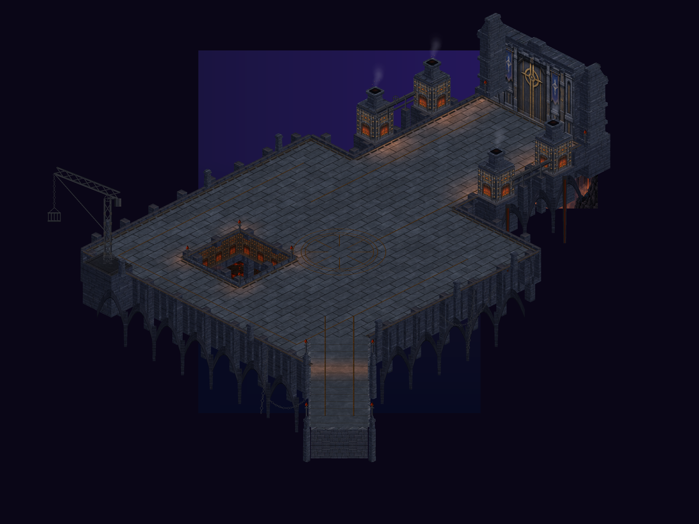
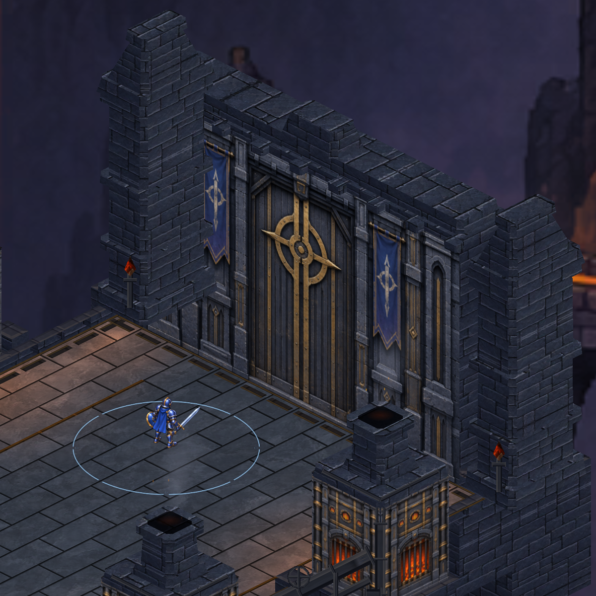
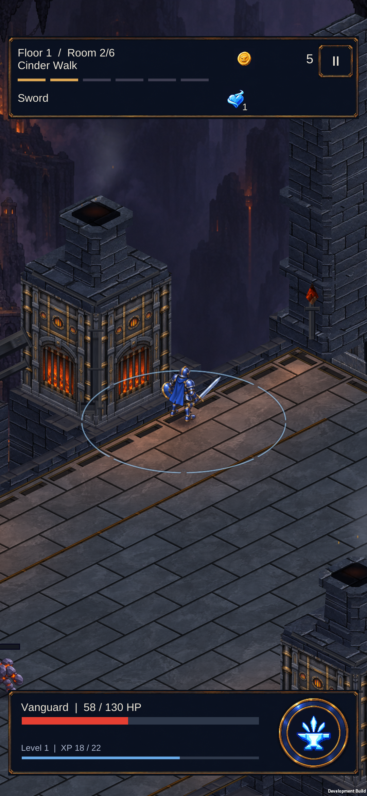

CRYPTFORGE / 25 EYLÜL 2026Duman, köz ve fırın ışığı
Bacalardan yükselen hafif duman, kuyu ve bacaların üzerinde küçük közler, ağızlarda yavaş ışık titreşimleri. Görüntüler gerçek Unity sahnesinden.
Hareket örneği
0,2 saniye aralıklarla alınmış sekiz Unity görüntüsü. Kısa döngü yeniden başlarken görülen atlama önizlemeye aittir.

Haritanın bütünü

Kapı ve bacalar

Telefonda
S23 üzerinde yüklendi. 535 Unity testi geçti; oyun fırınların yanında duraklatıldı.

Üretim ve doğrulama kaydı